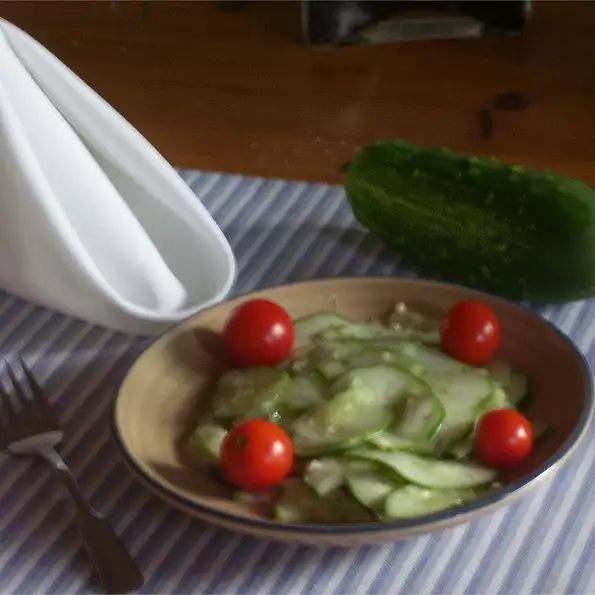

Cucumber

Description
This Cucumber Salad is made with onions and creamy salad dressing. Very easy!
Ingredients
-
5 cucumbers, peeled and thinly sliced
-
1 red onion, thinly sliced
Steps
-
In a large bowl, combine the cucumbers, onion, salad dressing and salt and pepper.
-
Mix together and serve.